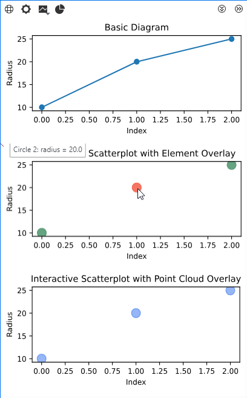

Using Custom Diagrams

General
Custom diagrams are the successor of Scripted diagrams. In comparison, Custom diagrams offer greater flexibility and interactivity.
Custom diagrams require Custom actual/nominal elements as diagram data sources.
See also
Prerequisite: Implement custom element payloads first.
See Custom elements, especially Custom actual/nominal elements.
Overview
Use Cases & Applications
Quality Control Dashboards
Visualize inspection results across multiple measurements
Interactive elements link to detailed check information
Real-time updates as new measurements are processed
Measurement Analysis
Custom scatter plots, trend analysis, statistical distributions
Link plot points directly to 3D measurement data
Filter and partition data by measurement series or stages
Process Monitoring
Time-series charts of measurement results
Interactive timeline with drill-down capabilities
Custom alerts and threshold visualization
Custom Reporting
Generate interactive reports with embedded diagrams
Export capabilities for external documentation
Custom styling and branding options
Custom Diagram System Architecture
---
title: Architecture Overview
---
graph TB
ZEISS["ZEISS INSPECT<br/>Application Layer"]
API["Diagram API<br/>(ZEISS)"]
RENDER["Rendering Layer<br/>(JavaScript)"]
MPL["Matplotlib<br/>(Optional)"]
ZEISS --> API
API --> RENDER
API -.-> MPL
MPL -.-> RENDER
%% Styling
classDef zeissApp fill:#e3f2fd,stroke:#1565c0,stroke-width:3px,color:#000000
classDef diagramAPI fill:#f3e5f5,stroke:#7b1fa2,stroke-width:3px,color:#000000
classDef rendering fill:#e8f5e8,stroke:#2e7d32,stroke-width:3px,color:#000000
classDef matplotlib fill:#fff3e0,stroke:#f57c00,stroke-width:3px,color:#000000
class ZEISS zeissApp
class API diagramAPI
class RENDER rendering
class MPL matplotlib
The Application Layer provides raw data from Custom nominal/actual elements for displaying in a diagram. The Diagram API allows to create diagram data structures (e.g. SVG), optionally by using the Matplotlib Python library. The Rendering Layer displays the diagram and handles user input for interactive diagrams.
---
title: ZEISS INSPECT Application Layer
---
graph TB
subgraph "Data Sources"
PROJECT[Project<br/>Complete measurement project]
ELEMENTS[Elements<br/>Geometry, checks, measurements]
STAGES[Stages<br/>Data snapshots for multi-state analysis]
end
subgraph "User Interface"
DIAGRAM_VIEW[Diagram View<br/>UI panel for display]
SELECTION[Element Selection<br/>User-chosen elements]
EXPLORER[Project Explorer<br/>Element browser]
end
PROJECT --> ELEMENTS
ELEMENTS --> SELECTION
EXPLORER --> SELECTION
SELECTION --> DIAGRAM_VIEW
classDef dataSource fill:#bbdefb,stroke:#1976d2,stroke-width:2px,color:#000000
classDef ui fill:#c8e6c9,stroke:#388e3c,stroke-width:2px,color:#000000
class PROJECT,ELEMENTS,STAGES dataSource
class DIAGRAM_VIEW,SELECTION,EXPLORER ui
The ZEISS INSPECT Application Layer provides the current project’s element data and the user interface with a diagram view, which also allows user interaction.
---
title: Diagram API Layer (ZEISS)
---
graph TB
subgraph "Data Processing"
ELEMENT_DATA["Element Data<br/>Input: element, data, type"]
PARTITIONS["Partitions<br/>Data subsets for rendering"]
VIEW_PARAMS["View Parameters<br/>Canvas properties"]
end
subgraph "Base Classes"
SCRIPTED["CustomDiagram<br/>Generic base class"]
SVG["SVGDiagram<br/>SVG specialization"]
end
subgraph "Interaction"
OVERLAY["Overlay<br/>Interactive mapping"]
EVENTS["Events<br/>User interactions"]
CALLBACKS["Callbacks<br/>Response scripts"]
end
ELEMENT_DATA --> PARTITIONS
PARTITIONS --> VIEW_PARAMS
VIEW_PARAMS --> SCRIPTED
VIEW_PARAMS --> SVG
SVG --> OVERLAY
OVERLAY --> EVENTS
EVENTS --> CALLBACKS
classDef dataProc fill:#e1bee7,stroke:#8e24aa,stroke-width:2px,color:#000000
classDef coreClass fill:#f8bbd9,stroke:#c2185b,stroke-width:2px,color:#000000
classDef interaction fill:#dcedc8,stroke:#689f38,stroke-width:2px,color:#000000
class ELEMENT_DATA,PARTITIONS,VIEW_PARAMS dataProc
class SCRIPTED,SVG coreClass
class OVERLAY,EVENTS,CALLBACKS interaction
The Diagram API Layer (ZEISS) creates a diagram data structure by using either
- CustomDiagram
A generic base class (which requires a user-defined renderer).
or
- SVGDiagram
A specialized base class for using the SVGDiagram renderer provided by the INSPECT App.
Interactions are implemented via
- Overlay
Mapping diagram view coordinates to diagram plot coordinates, providing a tooltip (optional) or an event function (optional).
- Events
Linking interactions with the diagram to callbacks.
- Callbacks
Functions / scripts which are executed when triggered by events.
---
title: Rendering Layer (JavaScript)
---
graph TB
subgraph "Renderers"
SVG_RENDERER["SVGDiagram Renderer<br/>Built-in SVG + interaction"]
CUSTOM_RENDERER["Custom Renderers<br/>User-defined logic"]
end
subgraph "Drawing Environment"
CANVAS["Canvas<br/>Drawing surface"]
VIEWPORT["Viewport<br/>Visible area"]
HITBOXES["Hitboxes<br/>Click regions"]
end
subgraph "User Interaction"
MOUSE["Mouse Events<br/>Click, hover, drag"]
TOOLTIPS["Tooltips<br/>Information display"]
NAVIGATION["Navigation<br/>Zoom, pan"]
end
SVG_RENDERER --> CANVAS
CUSTOM_RENDERER --> CANVAS
CANVAS --> VIEWPORT
VIEWPORT --> HITBOXES
HITBOXES --> MOUSE
MOUSE --> TOOLTIPS
VIEWPORT --> NAVIGATION
classDef renderer fill:#ffcdd2,stroke:#d32f2f,stroke-width:2px,color:#000000
classDef browser fill:#e0f2f1,stroke:#00695c,stroke-width:2px,color:#000000
classDef userInt fill:#f3e5f5,stroke:#7b1fa2,stroke-width:2px,color:#000000
class SVG_RENDERER,CUSTOM_RENDERER renderer
class CANVAS,VIEWPORT,HITBOXES browser
class MOUSE,TOOLTIPS,NAVIGATION userInt
The Rendering Layer (JavaScript) is handled by the GUI framework. It provides the drawing environment for displaying the diagram and features for user interactions.
---
title: Matplotlib Integration (Optional)
---
graph TB
subgraph "Matplotlib Hierarchy"
FIGURE["Figure<br/>Top-level container"]
AXES["Axes<br/>Plot coordinate system"]
SUBPLOT["Subplot<br/>Grid arrangement"]
PLOT["Plot Objects<br/>Lines, scatter, bars"]
ARTIST["Artist Objects<br/>Text, patches, annotations"]
end
subgraph "Integration Points"
SVG_OUTPUT["SVG Output<br/>fig.savefig(format='svg')"]
COORD_TRANSFORM["Coordinate Transform<br/>Matplotlib → SVG coords"]
DATA_PREP["Data Preparation<br/>ZEISS elements → plot data"]
end
FIGURE --> AXES
AXES --> SUBPLOT
AXES --> PLOT
AXES --> ARTIST
FIGURE --> SVG_OUTPUT
PLOT --> COORD_TRANSFORM
SVG_OUTPUT --> DATA_PREP
classDef mplCore fill:#fff8e1,stroke:#f57c00,stroke-width:2px,color:#000000
classDef integration fill:#e8eaf6,stroke:#3f51b5,stroke-width:2px,color:#000000
class FIGURE,AXES,SUBPLOT,PLOT,ARTIST mplCore
class SVG_OUTPUT,COORD_TRANSFORM,DATA_PREP integration
Matplotlib is a comprehensive library for creating huge variety of diagram types allowing customization.
Core Terminology by Layer
ZEISS INSPECT Layer:
Project: Complete measurement project with all data
Element: Individual geometry/inspection objects (points, surfaces, dimensions)
Stage: Data snapshot for multi-state analysis (same nominal, different actual data)
Diagram View: UI panel displaying diagrams within ZEISS INSPECT
Diagram API Layer:
Element Data: Input structure
[{'element': obj, 'data': dict, 'type': str}]Partitions: Data subsets for separate rendering (large dataset handling)
View Parameters: Canvas properties (width, height, DPI, font, subplot index)
Overlay: Interactive mapping (Element UUIDs → coordinates + tooltips; optional
custom_interactionflag)
Rendering Layer:
SVGDiagram Renderer: Built-in SVG renderer with interaction support
Canvas: Drawing surface for diagram display
Hitboxes: Clickable regions generated from overlay coordinates
Matplotlib Integration (Optional):
Figure: Top-level matplotlib container
Axes: Plot coordinate system and drawing area
Plot Objects: Lines, scatter plots, bars, etc.
Subplot: Multiple plots in grid arrangement
Artist Objects: Text, patches, annotations for customization
Data Flow & Interaction Pattern
sequenceDiagram
participant UI as ZEISS INSPECT UI
participant DV as Diagram View
participant SD as CustomDiagram
participant JS as JavaScript Renderer
participant User as User
Note over UI,User: Diagram Creation & Display
UI->>SD: Initialize with element data
SD->>SD: partitions(element_data)
Note right of SD: Optional: Split data into partitions
loop For each partition
SD->>SD: plot(view, element_data)
Note right of SD: Transform data for renderer
SD->>JS: Return plot data
JS->>DV: Render diagram
end
DV->>UI: Display complete diagram
Note over UI,User: User Interaction
User->>DV: Click/hover on element
DV->>SD: event(element_name, element_uuid, event_data)
SD->>SD: Process interaction
SD->>SD: finish_event(cmd_script, params)
SD->>UI: Execute follow-up script
UI->>User: Update interface/selection
Implementation
Custom diagrams require Custom nominal/actual elements for data input.
Suggested Learning Path
If you are new to custom diagrams, use this order:
Start with Basic Custom Diagram to verify plotting and service setup.
Continue with Custom Diagram with Element Overlay when you need full element-level hit detection and renderer tuning.
Use Custom Diagram with Point Cloud Overlay for point-based interaction mapping.
In the following sections, you find
Custom element – An example custom element as diagram data source
Basic Custom Diagram – A minimal example without interactivity
Custom Diagram with Element Overlay – An example with element overlay for interactivity
Custom Diagram with Point Cloud Overlay – An example with point cloud overlay for interactivity
Custom Element
The method finish() is implemented to assign element data to diagrams.
The helper function ‘add_diagram_data’ can be used to map diagram IDs to data entries.
It is possible to add multiple data entries to any number of diagram ids.
@apicontribution
class MyActualCircle (gom.api.extensions.actuals.Circle):
def __init__ (self):
"""Register the custom actual circle contribution."""
super ().__init__ (id='examples.custom_diagrams.actual_circle', description='Custom Actual Circle for Diagram Examples')
def dialog (self, context, args):
"""Open the input dialog for center, direction, and radius."""
return self.show_dialog (context, args, '/Custom_Circle.gdlg')
def compute (self, context, values):
"""Compute circle geometry and payload from dialog values."""
# ... parse values and return center/direction/radius payload ...
return {'center': (...), 'direction': (...), 'radius': values['radius']}
def finish (self, context , results_states):
"""Map stage-0 element results to diagram services via contribution IDs."""
diagram_data = []
# All examples in this App use the SVGDiagram renderer.
self.add_diagram_data(
diagram_data = diagram_data,
diagram_id = 'SVGDiagram',
service_id = 'com.zeiss.example.custom_diagrams.basic',
element_data = results_states["results"][0]
)
self.add_diagram_data(
diagram_data = diagram_data,
diagram_id = 'SVGDiagram',
service_id = 'com.zeiss.example.custom_diagrams.element_overlay',
element_data = results_states["results"][0]
)
self.add_diagram_data(
diagram_data = diagram_data,
diagram_id = 'SVGDiagram',
service_id = 'com.zeiss.example.custom_diagrams.point_cloud_overlay',
element_data = results_states["results"][0]
)
results_states["diagram_data"] = diagram_data
return results_states
gom.run_api()
Full source in example App:
https://github.com/ZEISS/zeiss-inspect-app-examples/blob/main/AppExamples/custom_diagrams/CustomDiagramExamples/scripts/Custom_Circle.py
Note
With Scripted diagrams you would implement a service function to convert element data into diagram data.
See Custom nominal/actual elements for more information.
Custom Diagrams
Custom diagrams are based on the Extensions API, specifically gom.api.extensions.diagrams.
For rendering diagrams as SVG (Scalable Vector Graphics), a Custom Diagram class is created by using
SVGDiagram as the base class and implementing the plot() method. This base class provides additional methods for customization, like the event function to enable custom interactions.
For implementing static diagrams, using Matplotlib and converting the plot to an SVG string is sufficient (see Basic Custom Diagram).
Caution
Custom diagrams are executed as services in ZEISS INSPECT. Therefore, the App containing a diagram must configure the diagram script as a service in its metainfo.json file and the service has to be started (see Using Services for more information).
Caution
Open the tab ‘Inspection Details’ in the ZEISS INSPECT 3D View to see the custom diagram.
Note
Instead of using the SVGDiagram base class, it is possible to create a custom diagram/renderer pair.
The base class would then be CustomDiagram and a corresponding JavaScript renderer must be implemented in the App.
Basic Custom Diagram
This is a minimal example of a custom diagram using Matplotlib to create a static SVG plot without interactivity.
Note
Quick prerequisites:
The diagram script is configured as a service in
metainfo.jsonand the service is started.Matplotlib is available in the App environment.
Your custom element returns
diagram_dataviafinish()as shown above.
1import gom
2from gom import apicontribution
3import gom.api.extensions.diagrams
4import gom.api.extensions.diagrams.matplotlib_tools as mpltools
5import matplotlib.pyplot as plt
6
7@apicontribution
8class MyBasicDiagram(gom.api.extensions.diagrams.SVGDiagram):
9
10 def __init__(self):
11 """Initialize service metadata for the basic diagram."""
12 super().__init__(
13 id='com.zeiss.example.custom_diagrams.basic',
14 description='Basic Custom Diagram'
15 )
16
17 def plot(self, view, element_data):
18 """Render a radius-over-index line plot as SVG."""
19 # Helper methods omitted for clarity:
20 # _normalized_view(view), _export_svg(fig, safe_view)
21 safe_view = self._normalized_view(view)
22 fig = mpltools.setup_plot(plt, safe_view)
23 ax = fig.gca()
24
25 x = list(range(len(element_data)))
26 y = [element_entry['data']['radius'] for element_entry in element_data]
27
28 ax.plot(x, y, marker='o', linestyle='-', linewidth=1.5)
29 ax.set_title('Basic Diagram')
30 ax.set_xlabel('Index')
31 ax.set_ylabel('Radius')
32
33 svg_string = self._export_svg(fig, safe_view)
34 plt.close(fig)
35
36 return svg_string
37
38 gom.run_api()
Full source in example App:
https://github.com/ZEISS/zeiss-inspect-app-examples/blob/main/AppExamples/custom_diagrams/CustomDiagramExamples/scripts/basic_custom_diagram.py
Custom Diagram with Element Overlay
This example shows how to create an interactive custom diagram using an element overlay. This type of overlay covers each mapped element completely, precisely mapping clicks to an element.
Additionally, this example demonstrates customization options to make rendering more accessible without implementing a custom JavaScript diagram.
Note
Quick prerequisites:
The service is started and visible in the service manager.
The custom element data entries provide
elementreferences.A follow-up script named
testscript.pyexists in the App (or adjustevent()accordingly).
1import gom
2from gom import apicontribution
3import gom.api.extensions.diagrams.matplotlib_tools as mpltools
4import matplotlib.pyplot as plt
5
6@apicontribution
7class DiagramWithElementOverlay (gom.api.extensions.diagrams.SVGDiagram):
8
9 RENDER_CONFIG = {'auto_generated_overlay_use': True}
10 DEFAULT_MARKER_COLOR = '#4c956c'
11 SELECTED_MARKER_COLOR = '#f45d48'
12 MARKER_SIZE = 120
13
14 def __init__(self):
15 """Initialize service metadata and interaction state."""
16 super().__init__(id='com.zeiss.example.custom_diagrams.element_overlay',
17 description='Interactive Custom Diagram with Element Overlay')
18 self.last_clicked_uuid = None
19
20 # Helper methods omitted for clarity:
21 # _element_metadata(...), _marker_color(...), _export_svg(...)
22
23 def add_all_overlay_data(self, element_data, overlay):
24 """Auto-generated element overlay: each element maps to a full hitbox."""
25 for element_entry in element_data:
26 element_uuid, element_name = self._element_metadata(element_entry)
27 self.add_element_to_overlay(
28 overlay,
29 element_uuid,
30 (0, 0),
31 element_name=element_name,
32 tooltip=f"{element_name}: radius = {element_entry['data']['radius']}",
33 custom_interaction=True
34 )
35
36 def event(self, element_name, element_uuid, event_data):
37 """Handle overlay click events and forward callback arguments."""
38 self.last_clicked_uuid = element_uuid
39 return self.finish_event(
40 "testscript",
41 {
42 "name" : "testname",
43 "testval": 17.00351334,
44 "element_name": element_name,
45 "element_uuid": element_uuid,
46 "mouse": event_data
47 }
48 )
49
50 def plot(self, view, element_data):
51 """Render scatter markers with gid-based element overlay mapping."""
52 # _normalized_view(...) omitted for clarity.
53 fig = mpltools.setup_plot(plt, view)
54 ax = fig.gca()
55 overlay = {}
56
57 x, y = [], []
58 for index, element_entry in enumerate(element_data):
59 radius = element_entry['data']['radius']
60 x.append(index)
61 y.append(radius)
62
63 # Key concept: gid tag links plotted markers to element UUIDs.
64 for x_value, y_value, element_entry in zip(x, y, element_data):
65 element_uuid, _element_name = self._element_metadata(element_entry)
66 scatter_kwargs = {
67 's': self.MARKER_SIZE,
68 'c': self._marker_color(element_uuid),
69 'alpha': 0.85
70 }
71 if element_uuid:
72 scatter_kwargs['gid'] = self.get_overlay_tag(element_uuid)
73
74 ax.scatter(
75 x_value,
76 y_value,
77 **scatter_kwargs
78 )
79
80 ax.set_title('Interactive Scatterplot with Element Overlay')
81 ax.set_xlabel('Index')
82 ax.set_ylabel('Radius')
83
84 svg_string = self._export_svg(fig, view)
85 self.add_all_overlay_data(element_data, overlay)
86 plt.close(fig)
87
88 return self.finish_plot(svg_string, overlay, self.RENDER_CONFIG)
89
90 gom.run_api()
Full source in example App:
- https://github.com/ZEISS/zeiss-inspect-app-examples/blob/main/AppExamples/custom_diagrams/CustomDiagramExamples/scripts/element_overlay_custom_diagram.py
Note
Optional: Extended renderer tuning
Use this render_config if you want additional marker/debug/filter behavior:
from gom.api.extensions import diagrams
RCT = diagrams.SVGDiagram.RenderConfigToken
render_config = {
RCT.CUSTOM_HASH: str(hash((tuple(x), tuple(y)))),
RCT.DISABLE_MOUSE_EVENTS: False,
RCT.DISABLE_TOOLTIPS: False,
RCT.NEAREST_MARKER_SHAPE: "circle",
RCT.NEAREST_MARKER_SIZE: 3,
RCT.AUTO_GENERATED_OVERLAY_USE: True,
RCT.OVERLAY_FILTER_METHOD: "string-parser",
RCT.OVERLAY_ELEMENT_COUNT: len(x),
RCT.OVERLAY_USE_MOUSE_POSITION: True,
RCT.OVERLAY_EXPAND_HITBOXES: 10
}
Custom Diagram with Point Cloud Overlay
This example shows how to create an interactive custom diagram using a point cloud overlay. The advantage of this overlay type is a reduced computation time as compared to the element overlay.
This option is limited in flexibility and is only suitable for simple plots such as scatter plots, curves and polar plots, because it can only map individual points in the diagram (plus a configurable hitbox size) to an element.
Note
Quick prerequisites:
The service is started and receives diagram data from custom elements.
The plotted points and
element_dataorder match one-to-one.For custom click behavior, keep
custom_interaction=Trueon selected overlay points.In this example, only the first point uses
custom_interaction=True; all other points are added without custom interaction.
1import gom
2from gom import apicontribution
3import gom.api.extensions.diagrams
4import gom.api.extensions.diagrams.matplotlib_tools as mpltools
5import matplotlib.pyplot as plt
6
7@apicontribution
8class DiagramWithPointCloudOverlay (gom.api.extensions.diagrams.SVGDiagram):
9
10 INTERACTION_SCRIPT = 'testscript'
11 INTERACTION_ARGS = {'name': 'testname', 'testval': 17.00351334}
12 MARKER_SIZE = 120
13 MARKER_COLOR = '#2f6fed'
14 MARKER_ALPHA = 0.5
15
16 def __init__(self):
17 """Initialize service metadata for point-cloud overlay rendering."""
18 super().__init__(id='com.zeiss.example.custom_diagrams.point_cloud_overlay',
19 description='Interactive Custom Diagram with Point Cloud Overlay')
20
21 # Helper methods omitted for clarity:
22 # _normalized_view(...), _normalize_overlay_point(...), _export_svg(...)
23
24 def add_all_overlay_data(self, element_data, display_coords, view, overlay):
25 """Populate point-cloud overlay entries using display coordinates."""
26
27 for index, (element_entry, point_coords) in enumerate(zip(element_data, display_coords)):
28 interaction_point = self._normalize_overlay_point(point_coords, view)
29 if index == 0:
30 self.add_element_to_overlay(
31 overlay,
32 element_entry['uuid'],
33 interaction_point,
34 tooltip = element_entry['element'],
35 # Keep custom interaction on the first point only.
36 custom_interaction = True
37 )
38 else:
39 self.add_element_to_overlay(
40 overlay,
41 element_entry['uuid'],
42 interaction_point,
43 tooltip = element_entry['element']
44 )
45
46 def event(self, element_name, element_uuid, event_data):
47 """Handle point-overlay click events and forward callback arguments."""
48 callback_args = dict(self.INTERACTION_ARGS)
49 callback_args.update({
50 'element_name': element_name,
51 'element_uuid': element_uuid,
52 'mouse': event_data
53 })
54 return self.finish_event(self.INTERACTION_SCRIPT, callback_args)
55
56 def plot(self, view, element_data):
57 """Render scatter markers and map overlay points by display coordinates."""
58 # Key concept: use display coordinates for point-based overlay mapping.
59 fig = mpltools.setup_plot(plt, view)
60 ax = fig.gca()
61 overlay = {}
62
63 x = []
64 y = []
65 for index, element_entry in enumerate(element_data):
66 radius = element_entry['data']['radius']
67 x.append(index)
68 y.append(radius)
69
70 points = list(zip(x, y))
71 display_coords = mpltools.get_display_coords(ax, points, view)
72
73 # No gid mapping here. Overlay points are matched by display coordinates.
74 for x_value, y_value in points:
75 ax.scatter(
76 x_value,
77 y_value,
78 s=self.MARKER_SIZE,
79 c=self.MARKER_COLOR,
80 alpha=self.MARKER_ALPHA
81 )
82 ax.set_title('Interactive Scatterplot with Point Cloud Overlay')
83 ax.set_xlabel('Index')
84 ax.set_ylabel('Radius')
85
86 svg_string = self._export_svg(fig, view)
87
88 self.add_all_overlay_data(
89 element_data,
90 display_coords,
91 view,
92 overlay
93 )
94 plt.close(fig)
95
96 return self.finish_plot(svg_string, overlay)
97
98 gom.run_api()
Full source in example App:
https://github.com/ZEISS/zeiss-inspect-app-examples/blob/main/AppExamples/custom_diagrams/CustomDiagramExamples/scripts/point_cloud_overlay_custom_diagram.py
Data Structure Examples
Element Data Structure
element_data = [
{
'element': gom.app.project.actual_elements['Circle 1'], # ZEISS INSPECT element object
'data': {'center': [1.0, 1.0, 2.0], 'direction': [1.0, 0.0, 0.0], 'radius': 3.0}, # Element-specific data
'type': 'SVGDiagram' # Element type identifier
},
{
'element': gom.app.project.actual_elements['Circle 2'],
'data': {'center': [2.0, 2.0, 3.0], 'direction': [0.0, 1.0, 0.0], 'radius': 4.0},
'type': 'SVGDiagram'
}
]
View Parameters Structure
view = {
'width': 800, # Canvas width in pixels
'height': 600, # Canvas height in pixels
'dpi': 96.0, # Display DPI for scaling
'font': 12, # Base font size
'subplot': 0 # Partition/subplot index (0-based)
}
SVG Overlay Structure (Simplified)
overlay = {
'element-uuid-123': {
'element_name': 'Circle 1',
'coordinates': [
{
'x': 0.0805,
'y': 0.8900,
'custom_interaction': True
}
],
'tooltip': 'Circle 1: radius = 3.0'
},
'element-uuid-456': {
'element_name': 'Circle 2',
'coordinates': [
{
'x': 0.9485,
'y': 0.0835
}
],
'tooltip': 'Circle 2: radius = 4.0'
}
}
In the point-cloud overlay example, custom_interaction is intentionally enabled for the first point only.